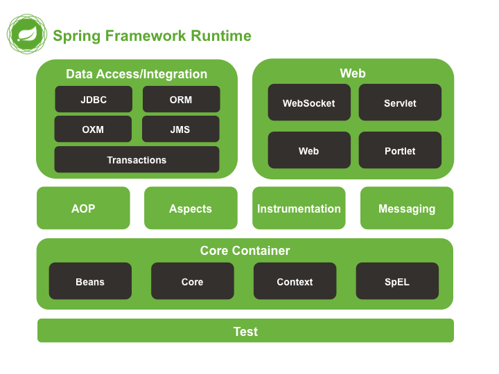

Βημα 1 : Τι ειναι το Spring Framework
Το Spring Framework είναι μια πλατφόρμα Java, ανοιχτού κώδικα,
η οποία παρέχει υποστήριξη για την γρήγορη δημιουργία εφαρμογών Java. Είναι το πιο δημοφιλές framework ανάπτυξης, enterprise
εφαρμογών Java.
Features του Spring Framework
1. Ελαφρύ
Το Spring είναι ένα ελαφρύ, modular framework, το οποίο επιτρέπει την επιλογή οποιουδήποτε module,
πάνω απο το Spring Core.
2. Inversion Of Control
Οι εξαρτήσεις της εφαρμογής ικανοποιούνται από το ίδιο το framework. Το Framework δημιουργεί τα αντικείμενα
κατά την εκτέλεση του εφαρμογής και ικανοποιεί τις εξαρτήσεις της εφαρμογής.
3. Aspect Oriented Programming
Οι developers μπορούν να χρησιμοποιήσουν το AOP, για να αναπτύξουν μια εφαρμογή, όπου το business logic είναι
διαχωρισμένο από τα system services.
4. Container
Παρέχει το δικό του container, για τη διαχείριση των αντικειμένων - beans.
5. MVC Framework
Το Spring MVC Framework μπορεί να χρησιμοποιηθεί, για την ανάπτυξη web εφαρμογών.
6. Transaction Management
Παρέχει ένα γενικό επίπεδο Transaction Management.
Πλεονεκτήματα του Spring Framework
- Το Spring επιτρέπει στους developers, να αναπτύσουν enterprise εφαρμογές, χρησιμοποιώντας POJOs.
Το πλεονέκτημα της χρησιμοποίησης μόνο POJOs είναι ότι δεν χρειάζομαστε ένα EJB container, όπως ένα
application server, αλλά έχουμε την επιλογή, να χρησιμοποιήσουμε ένα servlet Container όπως Tomcat.
- Η εφαρμογές σε Spring έχουν χαμηλή σύζευξη, εξαιτίας του dependency injection.
- Τα IoC containers τείνουν να είναι ελαφριά, ειδικά σε σύγκριση με τα EJB containers. Αυτό είναι χρήσιμο,
για την ανάπτυξη εφαρμογών, που θα φιλεξονηθούν σε υπολογιστές με περιορισμένη μνήμη και CPU.
- Είναι χωρισμένο σε modules. Αν και έχει πολλά πακέτα και κλάσεις, χρησιμοποιούμε μόνο αυτά που χρειαζόμαστε.
- Δεν προσπαθεί, να ανακαλύψει ξανά τον τροχό. Αντίθετα, χρησιμοποιεί κάποιες από τις υπάρχουσες τεχνολογίες, όπως ORM
Frameworks, loggin frameworks, JEE και άλλες τεχνολογίες.
- Το testing μιας εφαρμογής, γραμμένη σε Spring είναι απλό γιατί ο εξαρτημένος από το περιβάλλον κώδικας, είναι
μετακινημένος μέσα στο framework. Επίσης, χρησιμοποιώντας POJOs, είναι ευκολότερο, να χρησιμοποιήσουμε dependency
injection, για να κάνουμε inject test δεδομένα.
- Το web framework του Spring είναι ένα ένα καλοσχεδιασμένο MVC Framework, το οποίο αποτελεί μια εξαιρετική
εναλλακτική αντί για web frameworks όπως το Strutts.
Spring Modules
Το Spring Framework αποτελείται από features, τα οποία είναι οργανωμένα σε 20 modules. Αυτά τα modules είναι
ομαδοποιημένα στο Core Container, Data Access/Integration, Web, AOP (Aspect Oriented Programming),
Instrumentation, Messaging και Test.
